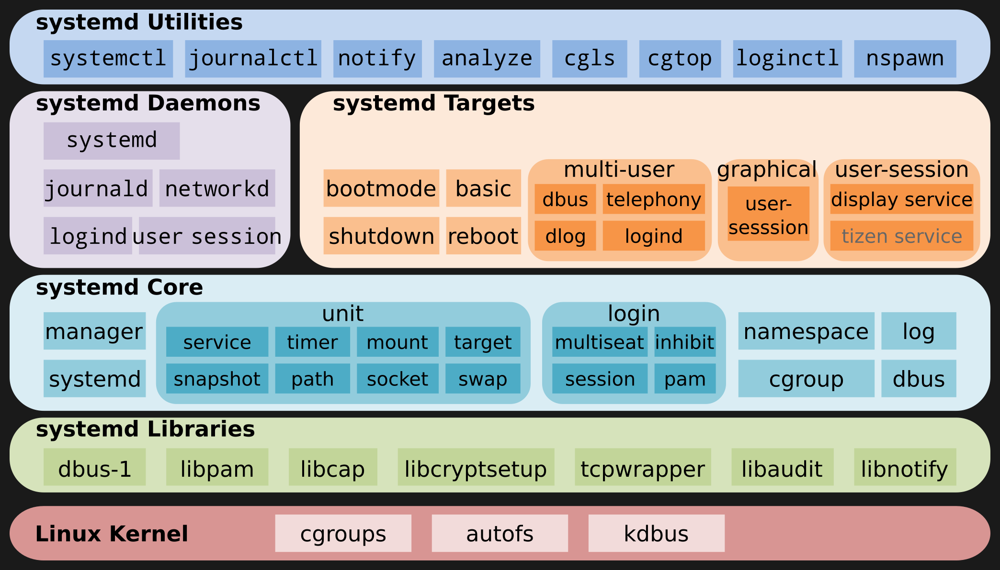

systemctl list-units --type=service
systemd 是pid 为1的进程，即系统进所有用户进程的父进程。它使用cgroup/namespace等管理系统内的所有资源（因为它是所有进程的父 进程，所以它有权管）。
systemd管理的所有资源都是通过unit文件配置给systemd去启动的。这次资源分为很多种类型：
这些配置可以对比Android的initrc文件和selinux配置去看，有很多相似之处。
/etc/systemd/system/：管理员依据主机系统的需求所建立的执行脚本，其实这个目录有点像以前/etc/rc.d/rc5.d/Sxx之类的功能。 /run/systemd/system/：系统执行过程中所产生的服务脚本，这些脚本的优先序要比/usr/lib/systemd/system/高！ /usr/lib/systemd/system/：每个服务最主要的启动脚本设定，有点类似以前的/etc/init.d底下的档案；
可以先list，然后用show命令去看配置文件的具体内容和所有路径：
systemctl list-units --type=automount
输出：
UNIT LOAD ACTIVE SUB DESCRIPTION
proc-sys-fs-binfmt_misc.automount loaded active running Arbitrary Executable File Formats File System Automo>
LOAD = Reflects whether the unit definition was properly loaded.
ACTIVE = The high-level unit activation state, i.e. generalization of SUB.
SUB = The low-level unit activation state, values depend on unit type.
1 loaded units listed. Pass --all to see loaded but inactive units, too.
To show all installed unit files use 'systemctl list-unit-files'.
systemctl show proc-sys-fs-binfmt_misc.automount
输出：
Where=/proc/sys/fs/binfmt_misc
DirectoryMode=0755
Result=success
TimeoutIdleUSec=0
Id=proc-sys-fs-binfmt_misc.automount
Names=proc-sys-fs-binfmt_misc.automount
WantedBy=sysinit.target
Before=systemd-binfmt.service proc-sys-fs-binfmt_misc.mount binfmt-support.service sysinit.target
After=-.mount
Triggers=proc-sys-fs-binfmt_misc.mount
RequiresMountsFor=/proc/sys/fs
Documentation=https://www.kernel.org/doc/html/latest/admin-guide/binfmt-misc.html https://www.freedesktop.org/>
Description=Arbitrary Executable File Formats File System Automount Point
LoadState=loaded
ActiveState=active
FreezerState=running
SubState=running
FragmentPath=/lib/systemd/system/proc-sys-fs-binfmt_misc.automount
UnitFileState=static
UnitFilePreset=enabled
StateChangeTimestamp=Wed 2022-07-13 23:15:19 CST
StateChangeTimestampMonotonic=5507885
InactiveExitTimestamp=Wed 2022-07-13 23:15:18 CST
InactiveExitTimestampMonotonic=4937320
ActiveEnterTimestamp=Wed 2022-07-13 23:15:18 CST
ActiveEnterTimestampMonotonic=4937320
ActiveExitTimestampMonotonic=0
InactiveEnterTimestampMonotonic=0
CanStart=yes
CanStop=yes
CanReload=no
CanIsolate=no
CanFreeze=no
StopWhenUnneeded=no
RefuseManualStart=no
RefuseManualStop=no
AllowIsolate=no
DefaultDependencies=no
OnFailureJobMode=replace
IgnoreOnIsolate=yes
NeedDaemonReload=no
JobTimeoutUSec=infinity
JobRunningTimeoutUSec=infinity
JobTimeoutAction=none
ConditionResult=yes
AssertResult=yes
ConditionTimestamp=Wed 2022-07-13 23:15:18 CST
ConditionTimestampMonotonic=4937143
AssertTimestamp=Wed 2022-07-13 23:15:18 CST
AssertTimestampMonotonic=4937170
Transient=no
Perpetual=no
StartLimitIntervalUSec=10s
StartLimitBurst=5
StartLimitAction=none
FailureAction=none
SuccessAction=none
InvocationID=14d256d70b0c46b99617f285f347a1bb
CollectMode=inactive
上述命令打印的是运行时信息，实际去看它的配置文件没有这么复杂：
cat /lib/systemd/system/proc-sys-fs-binfmt_misc.automount
输出:
[Unit]
Description=Arbitrary Executable File Formats File System Automount Point
Documentation=https://www.kernel.org/doc/html/latest/admin-guide/binfmt-misc.html
Documentation=https://www.freedesktop.org/wiki/Software/systemd/APIFileSystems
DefaultDependencies=no
Before=sysinit.target
ConditionPathExists=/proc/sys/fs/binfmt_misc/
ConditionPathIsReadWrite=/proc/sys/
[Automount]
Where=/proc/sys/fs/binfmt_misc

systemctl list-units --type=service
输出：
UNIT LOAD ACTIVE SUB DESCRIPTION
accounts-daemon.service loaded active running Accounts Service
alsa-restore.service loaded active exited Save/Restore Sound Card State
apparmor.service loaded active exited Load AppArmor profiles
avahi-daemon.service loaded active running Avahi mDNS/DNS-SD Stack
binfmt-support.service loaded active exited Enable support for additional exe>
bluetooth.service loaded active running Bluetooth service
cron.service loaded active running Regular background program proces>
dbus.service loaded active running D-Bus System Message Bus
gdm3.service loaded active exited LSB: GNOME Display Manager
haveged.service loaded active running Entropy Daemon based on the HAVEG>
ifupdown-pre.service loaded active exited Helper to synchronize boot up for>
kmod-static-nodes.service loaded active exited Create list of static device node>
lm-sensors.service loaded active exited Initialize hardware monitoring se>
lxc-net.service loaded active exited LXC network bridge setup
lxc.service loaded active exited LXC Container Initialization and >
lxcfs.service loaded active running FUSE filesystem for LXC
ModemManager.service loaded active running Modem Manager
networking.service loaded active exited Raise network interfaces
NetworkManager.service loaded active running Network Manager
● nvidia-persistenced.service loaded failed failed NVIDIA Persistence Daemon
packagekit.service loaded active running PackageKit Daemon
plymouth-quit-wait.service loaded active exited Hold until boot process finishes >
plymouth-quit.service loaded active exited Terminate Plymouth Boot Screen
plymouth-read-write.service loaded active exited Tell Plymouth To Write Out Runtim>
plymouth-start.service loaded active exited Show Plymouth Boot Screen
我们可以通过名字(去掉.service后缀)查看其中的一个：
systemctl cat dbus.service
# /lib/systemd/system/dbus.service
[Unit]
Description=D-Bus System Message Bus
Documentation=man:dbus-daemon(1)
Requires=dbus.socket
[Service]
ExecStart=/usr/bin/dbus-daemon --system --address=systemd: --nofork --nopidfile --systemd-activation --syslog->
ExecReload=/usr/bin/dbus-send --print-reply --system --type=method_call --dest=org.freedesktop.DBus / org.free>
OOMScoreAdjust=-900
lines 1-10/10 (END)
从配置文件我们可以知道如下信息：
想看查看这个服务的文档可以使用命令man 1 dbus-daemon。
这个服务的启动依赖于dbus.socket这个socket资源的创建.
它的启动和reload命令分别是…。
dbus.socket是另一个systemd管理的unit，我们可以看一下它的内容：
systemctl cat dbus.socket
输出:
# /lib/systemd/system/dbus.socket
[Unit]
Description=D-Bus System Message Bus Socket
[Socket]
ListenStream=/run/dbus/system_bus_socket
可以看到：
因为它的路径，显然它是一个unix domain socket。
ls /run/dbus/system_bus_socket -la
也可以通过show子命令来查看:
systemctl show dbus.socket
socket相关的systemd代码在这里：socket.c
systemd启动后第一个查看的配置文件是/etc/systemd/system/default.target，这个一个软链接，它指向的目标是可以get/set的。
default=$(systemctl get-default)
echo $default
systemctl cat $default
由于我的系统被我配置成了默认不进图形界面，所以它指向的是multi-user.target.
这时，我启动系统后进入命令行，需要手动运行sddm或是lightdm，才能进入图形界面。
如果想一启动就进入图形界面，需要设置default为graphical.target。
systemctl set-default graphicl.target
graphical.target的内容是:
systemctl cat graphical.target
[Unit]
Description=Graphical Interface
Documentation=man:systemd.special(7)
Requires=multi-user.target
Wants=display-manager.service
Conflicts=rescue.service rescue.target
After=multi-user.target rescue.service rescue.target display-manager.service
AllowIsolate=yes
可以看到它基本就是multi-user.target + display-manager.service。
systemctl cat display-manager.service
# /lib/systemd/system/lightdm.service
[Unit]
Description=Light Display Manager
Documentation=man:lightdm(1)
After=systemd-user-sessions.service
# replaces plymouth-quit since lightdm quits plymouth on its own
Conflicts=plymouth-quit.service
After=plymouth-quit.service
# lightdm takes responsibility for stopping plymouth, so if it fails
# for any reason, make sure plymouth still stops
OnFailure=plymouth-quit.service
[Service]
ExecStart=/usr/sbin/lightdm
Restart=always
BusName=org.freedesktop.DisplayManager
[Install]
Alias=display-manager.service
可以看到我的display-manager.service应该也是一个软链接，它指向lightdm.service。